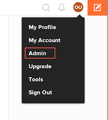
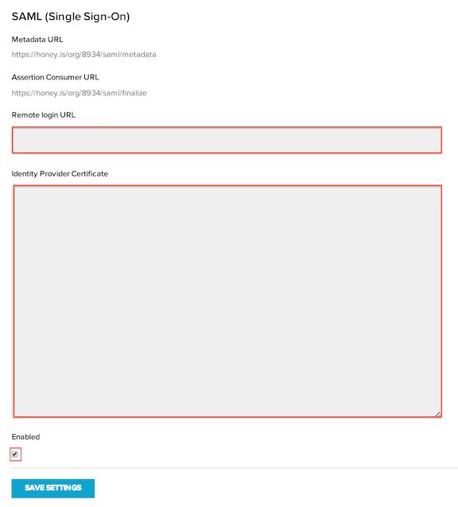
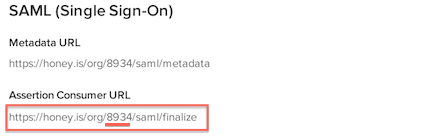

This setup might fail without parameter values that are customized for your organization. Please use the Okta Administrator Dashboard to add an application and view the values that are specific for your organization.
-
Sign in to Honey.is and click on Admin > Settings.

- Scroll down to the SAML Single Sign-on section, as shown below.

- Copy and paste the following into the Remote login URL field:
Sign into the Okta Admin dashboard to generate this value.
- Copy and paste the following into the Certificate field:
Sign into the Okta Admin Dashboard to generate this variable.
- Check the Enabled checkbox.
Important: If this box is not checked, SAML is not enabled for your account.
-
Click Save Settings
-
Copy your Company ID from the Assertion Consumer URL, shown below:

- In Okta, go to the General tab for the Honey.is app and paste your Company ID (the numeric part of Assertion Consumer URL) to the Company ID field, and then select Save.
- Done!
Note: Honey supports IDP-initiated and Just In Time (JIT) provisioning. SP-initiated flow is not supported.